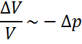
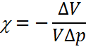
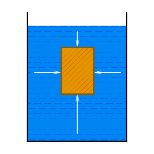
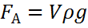
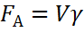
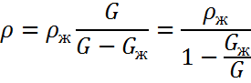
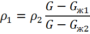

Коэффициент сжимаемости, сжимаемостьНесмотря на то, что подвижность молекул в жидкостях велика, жидкости удается заметно сжать только с помощью очень больших давлений. Примечание: Жидкости обладают ничтожной сжимаемостью! Относительное изменение объема прямо пропорционально изменению давления:  Определение: Коэффициент сжимаемости, сжимаемость — χ есть отношение относительного изменения объема к изменению давления, вызвавшему это изменение  Если
то по определению коэффициента сжимаемости или в дифференциальной форме Примечания: 1)В большинстве случаев изменение объема жидкости настолько ничтожно, что им можно пренебречь. 2)Знак минус в формулах и показывает, что увеличение давления сопровождается уменьшением объема и наоборот. 3)Сжимаемость почти не зависит от температуры и давления. Подъемная выталкивающая силаПогруженное в жидкость тело как бы теряет часть своего веса.Определение: Подъемная сила или Выталкивающая силанаправлена противоположно действующей на тело силе тяжести. Закон Архимеда гласитОпределение:Подъемная сила равна силе тяжести, действующей на вытесненную телом жидкость, и в случае тела правильной формы равна разности давлений столба жидкости непосредственно над и под телом. На тело, погруженное в жидкость, действует подъемная ( выталкивающая ) сила, направленная вверх. Ее величина равна весу вытесненной телом жидкости.  Если
то  или  Примечание: В зависимости от величины подъемной силы тело может находиться в трех положениях: Определение плотности твердого телаДля определения плотности твердого тела используются гидростатические весы, которые позволяют взвешивать тело как в воздухе, так и в жидкости. Если
то  Примечание: Такие измерения можно проводить только при условии, что тело не плавает на поверхности жидкости. Определение плотности жидкостиДля определения плотности жидкости также применяются гидростатические весы. Для измерений используют любое твердое тело, не плавающее на поверхности одной из жидкостей. Знать его объем и плотность не обязательно. Если
то  |